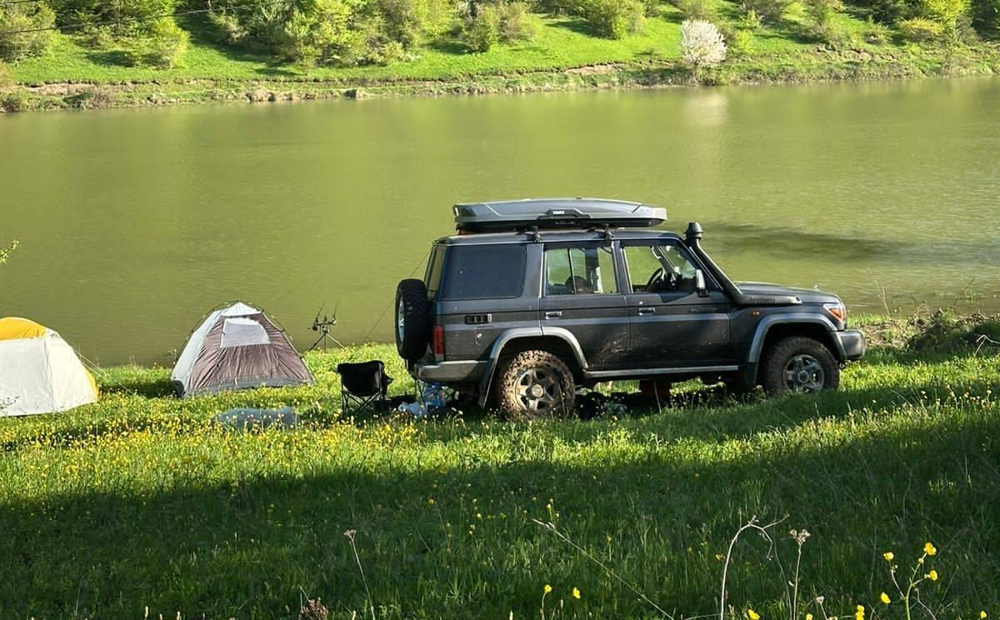
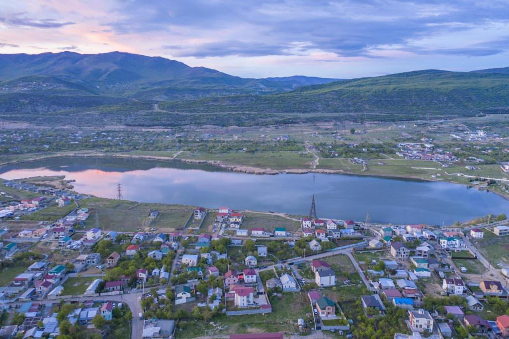
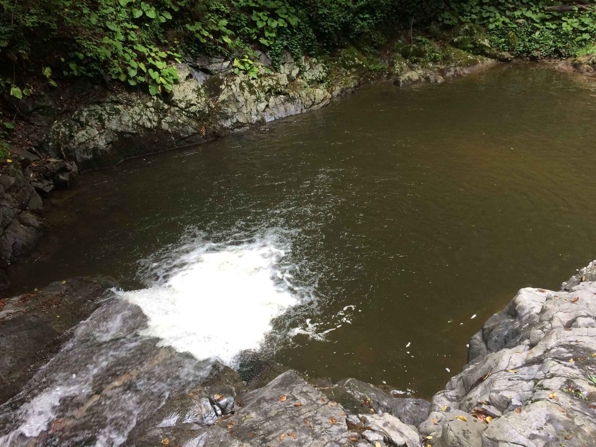

თბილისის ზღვიდან ამოყვანილი რეკორდული კობრი
იტალიაში მდინარე "პო" ზე დაჭერილი 120კგ-იანი ლოქო
თბილისში ახლი სათევზაო-სანადირო მაღაზია გაიხსნა

კოდიწყაროს ტბა ადგილი რომელიც მომავალში კობრზე თევზაობის ტურნირებს უმასპინძლებს

გლდანის ტბების ფეისბუქ გვერდი:როგორც უკვე იცით ,ტბის წყლით შევსების სამუშაოები დაიწყო და აქტიურად მიდის სამუშაოები .

ჭიათურის მუნიციპალიტეტის სოფელ გეზრულში, ადგილობრივი მოსახლეობის მხრიდან,მოხდა მდინარე ,,გეზრულა" ს გათევზიანება ,ენდემური სახეობის კალმახით.